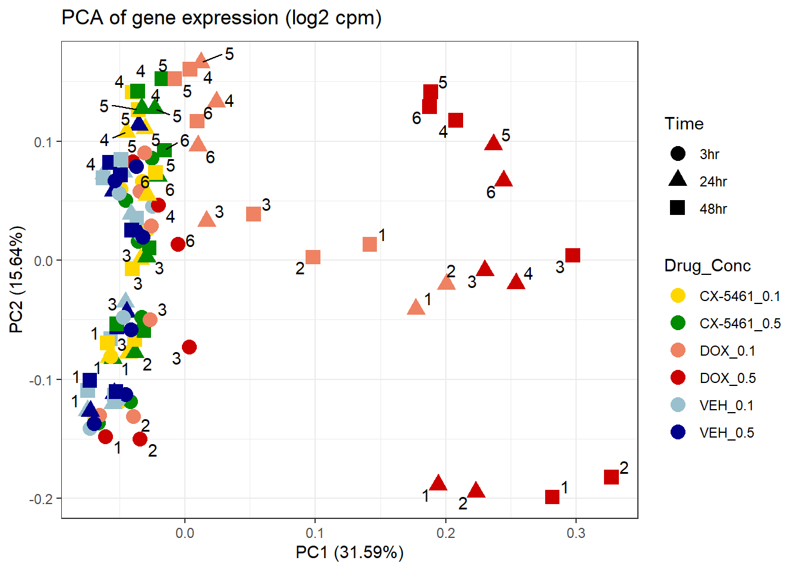
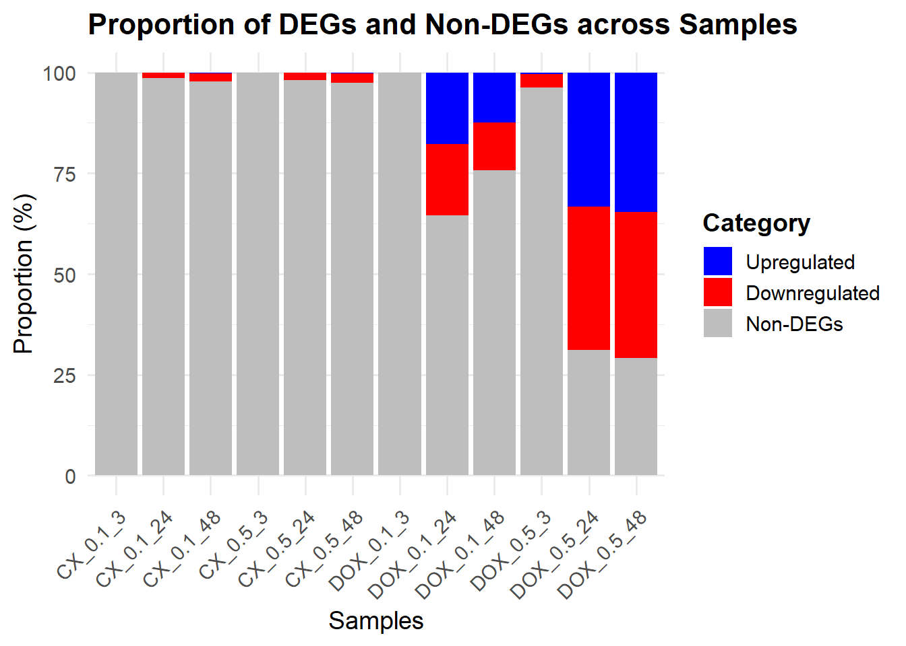
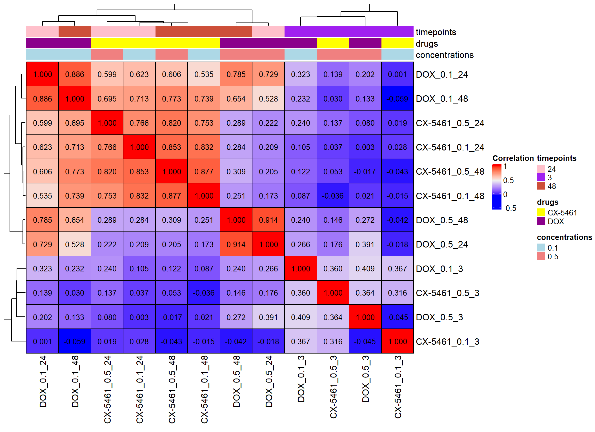

Figure_2
Last updated: 2025-08-05
Checks: 7 0
Knit directory: Paul_CX_2025/
This reproducible R Markdown analysis was created with workflowr (version 1.7.1). The Checks tab describes the reproducibility checks that were applied when the results were created. The Past versions tab lists the development history.
Great! Since the R Markdown file has been committed to the Git repository, you know the exact version of the code that produced these results.
Great job! The global environment was empty. Objects defined in the global environment can affect the analysis in your R Markdown file in unknown ways. For reproduciblity it’s best to always run the code in an empty environment.
The command set.seed(20250129) was run prior to running
the code in the R Markdown file. Setting a seed ensures that any results
that rely on randomness, e.g. subsampling or permutations, are
reproducible.
Great job! Recording the operating system, R version, and package versions is critical for reproducibility.
Nice! There were no cached chunks for this analysis, so you can be confident that you successfully produced the results during this run.
Great job! Using relative paths to the files within your workflowr project makes it easier to run your code on other machines.
Great! You are using Git for version control. Tracking code development and connecting the code version to the results is critical for reproducibility.
The results in this page were generated with repository version 0cd8ced. See the Past versions tab to see a history of the changes made to the R Markdown and HTML files.
Note that you need to be careful to ensure that all relevant files for
the analysis have been committed to Git prior to generating the results
(you can use wflow_publish or
wflow_git_commit). workflowr only checks the R Markdown
file, but you know if there are other scripts or data files that it
depends on. Below is the status of the Git repository when the results
were generated:
Ignored files:
Ignored: .RData
Ignored: .Rhistory
Ignored: .Rproj.user/
Ignored: 0.1 box.svg
Ignored: Rplot04.svg
Note that any generated files, e.g. HTML, png, CSS, etc., are not included in this status report because it is ok for generated content to have uncommitted changes.
These are the previous versions of the repository in which changes were
made to the R Markdown (analysis/Figure_2.Rmd) and HTML
(docs/Figure_2.html) files. If you’ve configured a remote
Git repository (see ?wflow_git_remote), click on the
hyperlinks in the table below to view the files as they were in that
past version.
| File | Version | Author | Date | Message |
|---|---|---|---|---|
| Rmd | 67aac02 | sayanpaul01 | 2025-08-05 | Commit |
| html | 67aac02 | sayanpaul01 | 2025-08-05 | Commit |
📌PCA of Filtered log2(CPM) (RowMeans > 0)
library(edgeR)Warning: package 'edgeR' was built under R version 4.3.2Warning: package 'limma' was built under R version 4.3.1library(ggplot2)
library(reshape2)
library(dplyr)Warning: package 'dplyr' was built under R version 4.3.2library(Biobase)Warning: package 'Biobase' was built under R version 4.3.1Warning: package 'BiocGenerics' was built under R version 4.3.1library(limma)
library(tidyverse)Warning: package 'tidyverse' was built under R version 4.3.2Warning: package 'tidyr' was built under R version 4.3.3Warning: package 'readr' was built under R version 4.3.3Warning: package 'purrr' was built under R version 4.3.3Warning: package 'stringr' was built under R version 4.3.2Warning: package 'lubridate' was built under R version 4.3.3library(scales)Warning: package 'scales' was built under R version 4.3.2library(biomaRt)Warning: package 'biomaRt' was built under R version 4.3.2library(ggrepel)Warning: package 'ggrepel' was built under R version 4.3.3library(corrplot)Warning: package 'corrplot' was built under R version 4.3.3library(Hmisc)Warning: package 'Hmisc' was built under R version 4.3.3library(org.Hs.eg.db)Warning: package 'AnnotationDbi' was built under R version 4.3.2Warning: package 'IRanges' was built under R version 4.3.1Warning: package 'S4Vectors' was built under R version 4.3.2library(AnnotationDbi)
library(tidyr)
library(ggfortify)
library(edgeR)
library(limma)
library(data.table)Warning: package 'data.table' was built under R version 4.3.3library(tidyverse)
library(ggplot2)
library(dplyr)
library(scales)
library(biomaRt)
library(Homo.sapiens)Warning: package 'OrganismDbi' was built under R version 4.3.1Warning: package 'GenomicFeatures' was built under R version 4.3.3Warning: package 'GenomeInfoDb' was built under R version 4.3.3Warning: package 'GenomicRanges' was built under R version 4.3.1library(ComplexHeatmap)Warning: package 'ComplexHeatmap' was built under R version 4.3.1library(tidyverse)
library(data.table)
### 📍 Load the Count Matrix CSV file
counts_matrix <- read.csv("data/counts_matrix.csv", header = TRUE, check.names = FALSE)
# Compute log2 Counts Per Million (CPM)
cpm <- cpm(counts_matrix)
lcpm <- cpm(counts_matrix, log = TRUE)
# Apply filtering thresholds
filcpm_matrix <- subset(lcpm, rowMeans(lcpm) > 0)
filcpm_matrix1 <- subset(lcpm, rowMeans(lcpm) > 0.5)
filcpm_matrix2 <- subset(lcpm, rowMeans(lcpm) > 1)
### 📌 Color palettes (updated)
drug_conc_palette <- c(
"CX-5461_0.1" = "gold", # light green
"CX-5461_0.5" = "green4", # dark green
"DOX_0.1" = "salmon2", # peach
"DOX_0.5" = "red3", # burnt orange
"VEH_0.1" = "lightblue3", # sky blue
"VEH_0.5" = "darkblue" # navy blue
)
drug_palc <- c("#8B006D","#DF707E","#F1B72B", "#3386DD","#707031","#41B333")
drug_palc1 <- c("#8B006D","#F1B72B", "#3386DD","#707031")
drug_palc2 <- c("#8B006D","#F1B72B", "#3386DD")
Metadata <- read.csv("data/Metadata.csv")
dim(Metadata)[1] 108 13head(Metadata) Sample Sample_bam Counts Ind Sex Drug Conc.
1 MCW_SP_JT_R1_R1 MCW_SP_JT_R1_R1.bam 33084169 4 Male CX-5461 0.1
2 MCW_SP_JT_R10_R1 MCW_SP_JT_R10_R1.bam 25345827 4 Male DOX 0.5
3 MCW_SP_JT_R100_R1 MCW_SP_JT_R100_R1.bam 28098918 3 Female DOX 0.5
4 MCW_SP_JT_R101_R1 MCW_SP_JT_R101_R1.bam 28580787 3 Female VEH 0.1
5 MCW_SP_JT_R102_R1 MCW_SP_JT_R102_R1.bam 28144482 3 Female VEH 0.5
6 MCW_SP_JT_R103_R1 MCW_SP_JT_R103_R1.bam 28976075 3 Female CX-5461 0.1
Time Sample_name Sample_name_alt Condition Sample_ID
1 3 17-3_CX-5461_0.1_3 17.3_CX.5461_0.1_3 CX-5461_0.1 CX-5461_0.1_3_17-3
2 24 17-3_DOX_0.5_24 17.3_DOX_0.5_24 DOX_0.5 DOX_0.5_24_17-3
3 24 87-1_DOX_0.5_24 87.1_DOX_0.5_24 DOX_0.5 DOX_0.5_24_87-1
4 24 87-1_VEH_0.1_24 87.1_VEH_0.1_24 VEH_0.1 VEH_0.1_24_87-1
5 24 87-1_VEH_0.5_24 87.1_VEH_0.5_24 VEH_0.5 VEH_0.5_24_87-1
6 48 87-1_CX-5461_0.1_48 87.1_CX.5461_0.1_48 CX-5461_0.1 CX-5461_0.1_48_87-1
Drug_time
1 CX-5461_0.1_3
2 DOX_0.5_24
3 DOX_0.5_24
4 VEH_0.1_24
5 VEH_0.5_24
6 CX-5461_0.1_48# Time relabeling
Metadata$Time <- factor(Metadata$Time, levels = c(3, 24, 48),
labels = c("3hr", "24hr", "48hr"))
Metadata$Ind <- as.character(Metadata$Ind)
Metadata$Drug <- as.character(Metadata$Drug)
Metadata$Conc <- as.character(Metadata$Conc)
Metadata$Drug_Conc <- paste(Metadata$Drug, Metadata$Conc, sep = "_")
Metadata$Indiv <- factor(Metadata$Ind, levels = c("75-1", "78-1", "87-1", "17-3", "84-1", "90-1"),
labels = c("1 (Female)", "2 (Female)", "3 (Female)",
"4 (Male)", "5 (Male)", "6 (Male)"))
Indiv <- Metadata$Ind
matrix <- as.matrix(lcpm)
prcomp_res1 <- prcomp(t(filcpm_matrix %>% as.matrix()), center = TRUE)
ggplot2::autoplot(prcomp_res1, data = Metadata, colour = "Drug_Conc", shape = "Time", size =4, x=1, y=2) +
ggrepel::geom_text_repel(label=Indiv) +
scale_color_manual(values=drug_conc_palette) +
ggtitle(expression("PCA of gene expression (log2 cpm)")) +
theme_bw()Warning: ggrepel: 51 unlabeled data points (too many overlaps). Consider
increasing max.overlaps
| Version | Author | Date |
|---|---|---|
| 67aac02 | sayanpaul01 | 2025-08-05 |
📌 Proportion of DEGs
# Load required packages
library(dplyr)
library(tidyr)
library(ggplot2)
# Step 1: Load all DEG files from folder
deg_files <- list.files("data/DEGs/", pattern = "Toptable_.*\\.csv", full.names = TRUE)
# Step 2: Create named list of DEG data frames
deg_list <- lapply(deg_files, read.csv)
names(deg_list) <- gsub("Toptable_|\\.csv", "", basename(deg_files)) # e.g., "CX_0.1_3"
# Step 3: Process each DEG data frame
prop_data <- lapply(names(deg_list), function(name) {
df <- deg_list[[name]]
df <- df %>%
mutate(Category = case_when(
adj.P.Val < 0.05 & logFC > 0 ~ "Upregulated",
adj.P.Val < 0.05 & logFC < 0 ~ "Downregulated",
TRUE ~ "Non-DEGs"
))
df %>%
count(Category) %>%
mutate(Sample = name,
Proportion = 100 * n / sum(n)) %>%
dplyr::select(Sample, Category, Proportion)
}) %>% bind_rows()
# Step 4: Set the correct sample order (by time: 3hr, 24hr, 48hr within each drug-dose)
sample_order <- c(
"CX_0.1_3", "CX_0.1_24", "CX_0.1_48",
"CX_0.5_3", "CX_0.5_24", "CX_0.5_48",
"DOX_0.1_3", "DOX_0.1_24", "DOX_0.1_48",
"DOX_0.5_3", "DOX_0.5_24", "DOX_0.5_48"
)
prop_data$Sample <- factor(prop_data$Sample, levels = sample_order)
prop_data$Category <- factor(prop_data$Category, levels = c("Upregulated", "Downregulated", "Non-DEGs"))
# Step 5: Define fill colors
fill_colors <- c("Upregulated" = "blue", "Downregulated" = "red", "Non-DEGs" = "grey")
# Step 6: Plot the stacked bar chart
ggplot(prop_data, aes(x = Sample, y = Proportion, fill = Category)) +
geom_bar(stat = "identity") +
scale_fill_manual(values = fill_colors) +
labs(
title = "Proportion of DEGs and Non-DEGs across Samples",
x = "Samples",
y = "Proportion (%)"
) +
theme_minimal(base_size = 14) +
theme(
axis.text.x = element_text(angle = 45, hjust = 1),
plot.title = element_text(size = 16, face = "bold"),
legend.title = element_text(face = "bold")
)
| Version | Author | Date |
|---|---|---|
| 67aac02 | sayanpaul01 | 2025-08-05 |
📌 LogFC Correlation CX and DOX
library(ComplexHeatmap)
library(tidyverse)
library(data.table)
# Load logFC data from CSV
logFC_corr <- read.csv("data/LOG2FC.csv")
# Convert to dataframe
logFC_corr_df <- data.frame(logFC_corr)
# Remove 'X' prefix from the first column
names(logFC_corr_df)[1] <- sub("^X", "", names(logFC_corr_df)[1])
# Convert to matrix format for correlation analysis
log2corr <- as.matrix(logFC_corr_df[, -1])
# Display first few rows
print(head(log2corr)) CX.5461_0.1_3 CX.5461_0.1_24 CX.5461_0.1_48 CX.5461_0.5_3 CX.5461_0.5_24
[1,] 0.004014353 0.01797208 0.1843569 0.02720364 0.01672747
[2,] 0.175440414 0.09122136 0.2212550 -0.18005874 -0.11889672
[3,] 0.078881609 0.07834693 0.2786495 -0.08765174 0.10414165
[4,] 0.178167060 0.16311897 0.1577607 -0.17199420 -0.14578900
[5,] 0.303563222 0.10207047 0.3053246 -0.06573953 0.49701105
[6,] 0.152614389 0.04773016 0.1732226 -0.26468304 -0.09250807
CX.5461_0.5_48 DOX_0.1_3 DOX_0.1_24 DOX_0.1_48 DOX_0.5_3 DOX_0.5_24
[1,] 0.05809672 0.08247267 0.2200048 0.2815441 0.115454181 0.1581417
[2,] -0.03169605 -0.13564062 -0.1407592 -0.2064884 -0.195284631 -0.9096266
[3,] -0.11362867 0.09288180 0.2546936 0.3313280 0.006547797 0.2891939
[4,] -0.21285541 -0.13223667 -0.2684351 -0.2338832 -0.192421781 -0.5155552
[5,] -0.37877928 -0.09045264 0.1014059 0.4197312 0.177886764 0.4371439
[6,] -0.08389116 -0.09231344 -0.2104519 -0.1243965 -0.375429448 -0.5502692
DOX_0.5_48
[1,] 0.4372001
[2,] -1.3556420
[3,] 0.3328763
[4,] -0.9117574
[5,] 0.1966726
[6,] -0.7475815# Load metadata
meta <- read.csv("data/Meta.csv")
# Assign column names based on sample metadata
colnames(log2corr) <- meta$Sample
Drug <- meta$Drug
time <- meta$Time
conc <- as.character(meta$Conc.)
time_colors <- c("3" = "purple", "24" = "pink", "48" = "tomato3")
drug_colors <- c("CX-5461" = "yellow", "DOX" = "magenta4")
conc_colors <- c("0.1" = "lightblue", "0.5" = "lightcoral")
# Create annotations
top_annotation1 <- HeatmapAnnotation(
timepoints = time,
drugs = Drug,
concentrations = conc,
col = list(
timepoints = time_colors,
drugs = drug_colors,
concentrations = conc_colors
)
)
cor_matrix1 <- cor(log2corr, method = "pearson")
cor_matrix2 <- cor(log2corr, method = "spearman")
heatmap1 <- Heatmap(
cor_matrix1,
name = "Correlation",
top_annotation = top_annotation1,
rect_gp = gpar(col = "black", lwd = 1),
show_row_names = TRUE,
show_column_names = TRUE,
cell_fun = function(j, i, x, y, width, height, fill) {
grid.text(sprintf("%.3f", cor_matrix1[i, j]), x, y, gp = gpar(fontsize = 10, col = "black"))
}
)
# Draw the heatmap
draw(heatmap1)
| Version | Author | Date |
|---|---|---|
| 67aac02 | sayanpaul01 | 2025-08-05 |
📌 Top BP (Cluster Profiler)
# Load Required Libraries
library(tidyverse)
library(ComplexHeatmap)
library(circlize)Warning: package 'circlize' was built under R version 4.3.3library(grid)
# Input GO Enrichment Files
go_files <- list(
"CX_0.1_3" = "data/BP/All_Terms/GO_BP_CX_0.1_3.csv",
"CX_0.1_24" = "data/BP/All_Terms/GO_BP_CX_0.1_24.csv",
"CX_0.1_48" = "data/BP/All_Terms/GO_BP_CX_0.1_48.csv",
"CX_0.5_3" = "data/BP/All_Terms/GO_BP_CX_0.5_3.csv",
"CX_0.5_24" = "data/BP/All_Terms/GO_BP_CX_0.5_24.csv",
"CX_0.5_48" = "data/BP/All_Terms/GO_BP_CX_0.5_48.csv",
"DOX_0.1_3" = "data/BP/All_Terms/GO_BP_DOX_0.1_3.csv",
"DOX_0.1_24"= "data/BP/All_Terms/GO_BP_DOX_0.1_24.csv",
"DOX_0.1_48"= "data/BP/All_Terms/GO_BP_DOX_0.1_48.csv",
"DOX_0.5_3" = "data/BP/All_Terms/GO_BP_DOX_0.5_3.csv",
"DOX_0.5_24"= "data/BP/All_Terms/GO_BP_DOX_0.5_24.csv",
"DOX_0.5_48"= "data/BP/All_Terms/GO_BP_DOX_0.5_48.csv"
)
# Step 1: Extract Top 5 GO Terms (padj < 0.05) from each file
top_go_terms <- map(go_files, function(file) {
df <- tryCatch(read.csv(file), error = function(e) return(NULL))
if (!is.null(df) && "p.adjust" %in% names(df) && "Description" %in% names(df)) {
df %>%
as_tibble() %>%
filter(p.adjust < 0.05) %>%
arrange(p.adjust) %>%
dplyr::select(Description) %>%
slice_head(n = 5) %>%
pull(Description) %>%
unique()
} else {
character(0)
}
}) %>% unlist() %>% unique()
# Step 2: Build Combined Table
go_matrix_df <- map_dfr(names(go_files), function(cond) {
file <- go_files[[cond]]
message("Processing: ", cond)
df <- tryCatch(read.csv(file), error = function(e) return(data.frame()))
if (!"Description" %in% names(df) || nrow(df) == 0) {
message("→ Skipping (missing or empty): ", file)
return(tibble(Description = top_go_terms, pvalue = NA, p.adjust = NA, log10p = NA, Condition = cond))
}
df %>%
as_tibble() %>%
mutate(Description = as.character(Description)) %>%
dplyr::select(Description, pvalue, p.adjust) %>%
filter(Description %in% top_go_terms) %>%
mutate(log10p = -log10(pvalue)) %>%
right_join(tibble(Description = top_go_terms), by = "Description") %>%
mutate(Condition = cond)
})
# Step 3: Create Heatmap Matrices
heatmap_data <- go_matrix_df %>%
dplyr::select(Description, Condition, log10p) %>%
pivot_wider(names_from = Condition, values_from = log10p) %>%
column_to_rownames("Description") %>%
as.matrix()
pval_matrix <- go_matrix_df %>%
dplyr::select(Description, Condition, pvalue) %>%
pivot_wider(names_from = Condition, values_from = pvalue) %>%
column_to_rownames("Description") %>%
as.matrix()
p_adj_matrix <- go_matrix_df %>%
dplyr::select(Description, Condition, p.adjust) %>%
pivot_wider(names_from = Condition, values_from = p.adjust) %>%
column_to_rownames("Description") %>%
as.matrix()
# Step 4: Define Color Scale
breaks <- seq(0, 20, by = 2.5)
palette <- colorRampPalette(c("white", "#fde0dd", "#fa9fb5", "#f768a1", "#c51b8a", "#7a0177", "#49006a"))(length(breaks))
col_fun <- colorRamp2(breaks, palette)
# Step 5: Plot Heatmap with Stars
ht <- Heatmap(
heatmap_data,
name = "-log10(p)",
col = col_fun,
na_col = "white",
rect_gp = gpar(col = "black", lwd = 0.5),
cluster_rows = FALSE,
cluster_columns = FALSE,
row_names_gp = gpar(fontsize = 9),
column_names_gp = gpar(fontsize = 9),
column_names_rot = 45,
row_names_max_width = max_text_width(rownames(heatmap_data), gp = gpar(fontsize = 9)),
cell_fun = function(j, i, x, y, width, height, fill) {
if (!is.na(p_adj_matrix[i, j]) && p_adj_matrix[i, j] < 0.05) {
grid.text("*", x, y, gp = gpar(fontsize = 12))
}
},
heatmap_legend_param = list(
title = "-log10(p value)",
at = breaks,
labels = as.character(breaks),
legend_width = unit(5, "cm"),
direction = "horizontal",
title_gp = gpar(fontsize = 10, fontface = "bold"),
labels_gp = gpar(fontsize = 9)
)
)
# Draw final plot
draw(ht, heatmap_legend_side = "top")
| Version | Author | Date |
|---|---|---|
| 67aac02 | sayanpaul01 | 2025-08-05 |
sessionInfo()R version 4.3.0 (2023-04-21 ucrt)
Platform: x86_64-w64-mingw32/x64 (64-bit)
Running under: Windows 11 x64 (build 26100)
Matrix products: default
locale:
[1] LC_COLLATE=English_United States.utf8
[2] LC_CTYPE=English_United States.utf8
[3] LC_MONETARY=English_United States.utf8
[4] LC_NUMERIC=C
[5] LC_TIME=English_United States.utf8
time zone: America/Chicago
tzcode source: internal
attached base packages:
[1] grid stats4 stats graphics grDevices utils datasets
[8] methods base
other attached packages:
[1] circlize_0.4.16
[2] ComplexHeatmap_2.18.0
[3] Homo.sapiens_1.3.1
[4] TxDb.Hsapiens.UCSC.hg19.knownGene_3.2.2
[5] GO.db_3.18.0
[6] OrganismDbi_1.44.0
[7] GenomicFeatures_1.54.4
[8] GenomicRanges_1.54.1
[9] GenomeInfoDb_1.38.8
[10] data.table_1.17.0
[11] ggfortify_0.4.17
[12] org.Hs.eg.db_3.18.0
[13] AnnotationDbi_1.64.1
[14] IRanges_2.36.0
[15] S4Vectors_0.40.2
[16] Hmisc_5.2-3
[17] corrplot_0.95
[18] ggrepel_0.9.6
[19] biomaRt_2.58.2
[20] scales_1.3.0
[21] lubridate_1.9.4
[22] forcats_1.0.0
[23] stringr_1.5.1
[24] purrr_1.0.4
[25] readr_2.1.5
[26] tidyr_1.3.1
[27] tibble_3.2.1
[28] tidyverse_2.0.0
[29] Biobase_2.62.0
[30] BiocGenerics_0.48.1
[31] dplyr_1.1.4
[32] reshape2_1.4.4
[33] ggplot2_3.5.2
[34] edgeR_4.0.16
[35] limma_3.58.1
[36] workflowr_1.7.1
loaded via a namespace (and not attached):
[1] later_1.3.2 BiocIO_1.12.0
[3] bitops_1.0-9 filelock_1.0.3
[5] graph_1.80.0 XML_3.99-0.18
[7] rpart_4.1.24 lifecycle_1.0.4
[9] doParallel_1.0.17 rprojroot_2.0.4
[11] processx_3.8.6 lattice_0.22-7
[13] backports_1.5.0 magrittr_2.0.3
[15] sass_0.4.10 rmarkdown_2.29
[17] jquerylib_0.1.4 yaml_2.3.10
[19] httpuv_1.6.15 DBI_1.2.3
[21] RColorBrewer_1.1-3 abind_1.4-8
[23] zlibbioc_1.48.2 RCurl_1.98-1.17
[25] nnet_7.3-20 rappdirs_0.3.3
[27] git2r_0.36.2 GenomeInfoDbData_1.2.11
[29] codetools_0.2-20 DelayedArray_0.28.0
[31] xml2_1.3.8 tidyselect_1.2.1
[33] shape_1.4.6.1 farver_2.1.2
[35] matrixStats_1.5.0 BiocFileCache_2.10.2
[37] base64enc_0.1-3 GenomicAlignments_1.38.2
[39] jsonlite_2.0.0 GetoptLong_1.0.5
[41] Formula_1.2-5 iterators_1.0.14
[43] foreach_1.5.2 tools_4.3.0
[45] progress_1.2.3 Rcpp_1.0.12
[47] glue_1.7.0 gridExtra_2.3
[49] SparseArray_1.2.4 xfun_0.52
[51] MatrixGenerics_1.14.0 withr_3.0.2
[53] BiocManager_1.30.25 fastmap_1.2.0
[55] callr_3.7.6 digest_0.6.34
[57] timechange_0.3.0 R6_2.6.1
[59] colorspace_2.1-0 Cairo_1.6-2
[61] RSQLite_2.3.9 generics_0.1.3
[63] rtracklayer_1.62.0 prettyunits_1.2.0
[65] httr_1.4.7 htmlwidgets_1.6.4
[67] S4Arrays_1.2.1 whisker_0.4.1
[69] pkgconfig_2.0.3 gtable_0.3.6
[71] blob_1.2.4 XVector_0.42.0
[73] htmltools_0.5.8.1 RBGL_1.78.0
[75] clue_0.3-66 png_0.1-8
[77] knitr_1.50 rstudioapi_0.17.1
[79] tzdb_0.5.0 rjson_0.2.23
[81] checkmate_2.3.2 curl_6.2.2
[83] cachem_1.1.0 GlobalOptions_0.1.2
[85] parallel_4.3.0 foreign_0.8-90
[87] restfulr_0.0.15 pillar_1.10.2
[89] vctrs_0.6.5 promises_1.3.2
[91] dbplyr_2.5.0 cluster_2.1.8.1
[93] htmlTable_2.4.3 evaluate_1.0.3
[95] magick_2.8.6 cli_3.6.1
[97] locfit_1.5-9.12 compiler_4.3.0
[99] Rsamtools_2.18.0 rlang_1.1.3
[101] crayon_1.5.3 labeling_0.4.3
[103] ps_1.8.1 getPass_0.2-4
[105] plyr_1.8.9 fs_1.6.3
[107] stringi_1.8.3 BiocParallel_1.36.0
[109] munsell_0.5.1 Biostrings_2.70.3
[111] Matrix_1.6-1.1 hms_1.1.3
[113] bit64_4.6.0-1 KEGGREST_1.42.0
[115] statmod_1.5.0 SummarizedExperiment_1.32.0
[117] memoise_2.0.1 bslib_0.9.0
[119] bit_4.6.0